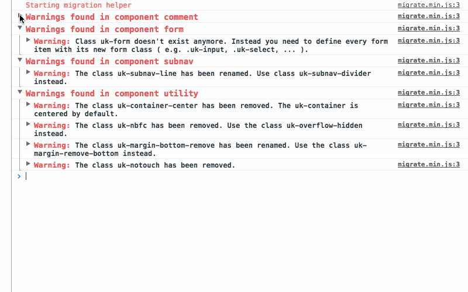

Migrate an existing UIkit website to the latest version.
If you have created a custom UIkit style, and overridden a *-color-mode variable, make sure it is set to either light or dark. It can no longer be set to none or be empty.
UIkit 3.18 introduces new *-color-mode Less variables for the default and muted style modifiers in Section, Tile, Card and Overlay components, just like for the primary and secondary style modifiers. Since the default UIkit style has light backgrounds, their color mode variables are set to dark by default. If you have a dark custom UIkit style where the color mode variables change to the opposite color, you also have to change the new color mode variables to light.
// For dark UIkit styles only
@card-default-color-mode: light;
@overlay-default-color-mode: light;
@section-default-color-mode: light;
@section-muted-color-mode: light;
@tile-default-color-mode: light;
@tile-muted-color-mode: light;The Scroll component now automatically adds the height of a sticky element, for example the sticky navbar, as offset to the scroll target so it is not covered by the sticky element. If there is already an offset for a sticky element, the offset option is added up. This means that you don't have to set the offset option to prevent the navbar from covering the scroll target anymore.
The Grid component now has a new masonry pack mode which will sort items into columns with the most room. To keep backward compatibility, setting masonry to true, will just use the new pack mode. To show items in their natural order, as before, use the next mode.
UIkit 3.16 simplifies some classes in the Drop component. Update your markup by replacing the following classes.
| Class | Replace with |
|---|---|
uk-dropdown-close |
uk-drop-close |
uk-dropdown-grid |
uk-drop-grid |
uk-navbar-dropdown-close |
uk-drop-close |
uk-navbar-dropdown-grid |
uk-drop-grid |
The Dropdown, Dropbar and Navbar Dropdown CSS is now based on the Drop component. Therefore, they have no longer individual z-index Less variables. If you have used one of those variables in a custom UIkit theme, you have to replace them.
| Less variable | Replace with |
|---|---|
@dropdown-z-index |
@drop-z-index |
@dropbar-z-index |
@drop-z-index |
@navbar-dropdown-z-index |
@drop-z-index |
The Nav component in UIkit 3.15 now uses a JavaScript component to create the parent icon for a nav item instead of compiling the parent icon into the CSS. Just search for the .uk-nav-parent-icon class and remove it from the markup. Simply use a span with the uk-nav-parent-icon attribute for each nav item with children instead. Here is a quick example.
<ul class="uk-nav-default" uk-nav>
<li class="uk-parent">
<a href="#">Parent <span uk-nav-parent-icon></span></a>
<ul class="uk-nav-sub">…</ul>
</li>
</ul>The Drop component, Dropdown component and Navbar component components remove alignment *-justify from the pos option. Search for pos: top-justify, pos: bottom-justify, pos: left-justify and pos: right-justify and use the new stretch option instead.
| Option | Replace with |
|---|---|
pos: top-justify |
pos: top-left; stretch: x |
pos: bottom-justify |
pos: bottom-left; stretch: x |
pos: left-justify |
pos: left-top; stretch: y |
pos: right-justify |
pos: right-top; stretch: y |
The boundary-align option is also removed. Search for boundary: SELECTOR in combination with boundary-align: true and use the new target option with the same selector from boundary instead.
| Option | Replace with |
|---|---|
boundary: SELECTOR; boundary-align: true |
target: SELECTOR |
The flip option is split into two options flip and shift. Update the options as follows.
| Option | Replace with |
|---|---|
flip: false |
flip: false; shift: false |
If the Position is top-* or bottom-*:
| Option | Replace with |
|---|---|
flip: x |
flip: false |
flip: y |
shift: false |
If the Position is left-* or right-*:
| Option | Replace with |
|---|---|
flip: x |
shift: false |
flip: y |
flip: false |
The display option is removed. Use auto-update instead.
| Option | Replace with |
|---|---|
display: static |
auto-update: false |
display: dynamic |
auto-update: true |
We removed the style from the dropbar in the Navbar component and now use the new Dropbar component instead. This is why the Navbar component sets .uk-dropbar and .uk-dropbar-top in addition to the .uk-navbar-dropbar class. If you place the dropbar markup manually, you need to add those classes yourself.
In Less we have removed the @navbar-dropbar-background variable, so to set a background, use the @dropbar-background variable instead. Make sure to add any further style you applied to the navbar dropbar as well.
The following Less variables are also renamed. Just find and replace these Less variables if you are using a custom Less theme.
| Less variable | Replace with |
|---|---|
@offcanvas-bar-width-m |
@offcanvas-bar-width-s |
@offcanvas-bar-padding-vertical-m |
@offcanvas-bar-padding-vertical-s |
@offcanvas-bar-padding-horizontal-m |
@offcanvas-bar-padding-horizontal-s |
@nav-primary-item-font-size |
@nav-primary-font-size |
@nav-primary-item-line-height |
@nav-primary-line-height |
@navbar-dropdown-dropbar-margin-top |
@navbar-dropdown-dropbar-padding-top |
@navbar-dropdown-dropbar-margin-bottom |
@navbar-dropdown-dropbar-padding-bottom |
UIkit 3.14 renames the top and bottom options to start and end in the Sticky component.
| Option | Replace with |
|---|---|
top |
start |
bottom |
end |
It also deprecates the position: auto option from the Sticky component. Simply use the new overflow-flip: true options instead.
| Option | Replace with |
|---|---|
position: auto |
overflow-flip: true |
UIkit 3.12 deprecates uk-img from the Image component for the <img> element. Simply use the native loading="lazy" attribute instead. This also applies if uk-img is used to target adjacent slides within Slideshows or Sliders. Both components, Slideshow and Slider, work with lazy loading images out of the box.
| Attribute | Replace with |
|---|---|
uk-img |
loading="lazy" |
Important This change also requires <img> elements to have width and height attributes to prevent layout shifts.
UIkit 3.11 adds new start and end options to the Parallax component and deprecates the viewport option. Replace the viewport option with the end option. Simply calculate 1 minus your viewport value and multiply it by 100vh + 100%. Here are some examples:
| Viewport Value | End Value |
|---|---|
0.6 |
40vh + 40% |
0.5 |
50vh + 50% |
0.3 |
70vh + 70% |
In UIkit 3.5 all Less variables and class names that have xxlarge in their name got renamed to 2xlarge for better consistency. Just find and replace these Less variables if you are using a custom Less theme. There is just one class in the Width component which has to be updated in your markup.
| Class | Replace with |
|---|---|
uk-width-xxlarge |
uk-width-2xlarge |
UIkit 3.3 adds a new uk-container-xlarge class to the Container component with a width of 1600px as default value. This is why the class uk-container-large changes its width from 1600px to 1400px. Update your markup by replacing the following classes.
| Class | Replace with |
|---|---|
uk-container-large |
uk-container-xlarge |
Since UIkit 3.2 adds a new uk-text-bolder class to the Text component, the class uk-text-bold now applies literally a bold font weight instead of bolder. The @text-bold-font-weight variable, which was set to bolder, got removed.
UIkit 3.1 adds the @deprecated Less variable. By default, it is set to false, and deprecated classes are not compiled into the CSS.
If you want to update your markup later and use the deprecated classes along with the new ones, set the variable to true in your custom UIkit theme.
@deprecated: true;The Primary and Hero classes in the Heading component are deprecated. Update your markup by replacing the following classes.
| Class | Replace with |
|---|---|
uk-heading-primary |
uk-heading-medium |
uk-heading-hero |
uk-heading-xlarge |
Uikit 3 offers a migration tool that runs in your browser and lists all necessary changes from an existing Uikit 2 site. Two options are available to run the tool: Via a bookmark or by including a single JavaScript file. The necessary migration changes are then listed in your browser's console.
The easiest way to use the migration tool is via a bookmark in your browser. You can then run the script on any page that you navigate to by simply clicking the bookmark. Just drag the following link into your browser's bookmark section.
Drag into your bookmark bar UIkit 3 Migration
Alternatively, you can manually create a bookmark with the following code as its URL.
javascript: (function () {
var script = document.createElement('script');
script.setAttribute('src', 'https://getuikit.com/migrate.min.js');
document.body.appendChild(script);
}());You can also run the migration tool by loading the needed JavaScript on your website. This way the migration script will always be loaded on your website. Remember to remove this when you have completed the migration. Add the following line just before the closing </body> tag.
<script src="https://getuikit.com/migrate.min.js"></script>To start the migration, replace the UIkit 2 files of your website with their UIkit 3 equivalents (both JS and CSS) and run the migration tool using one of the solutions listed above. To learn how to change your markup, open the developer console of your browser. You see a list of warnings and notices that tell you what to change. You can click the arrows next to any message to see more details about the necessary changes.

Every notice or warning message tells you what to change, including a list of all affected HTML elements. More complex changes are explained with examples that are easy to follow. The best way to migrate is to fix one component after another. That way you can see if the error messages are gone after a page reload and also see the changes on your site.
Warnings highlight all CSS classes or JavaScript attributes that are not supported anymore or have changed in UIkit 3. These warnings have to be fixed to migrate your website to UIkit 3.
Notices highlight potential issues that might not break your site. Some notices might not require a change at all. This is caused by the fact that some names from UIkit 2 still exist in UIkit 3, but now belong to a different component or carry different semantics. This can't be detected by the selectors we use to determine if this is a correct markup, so you need to take a look into it and decide if you already have changed it or still need to fix it.